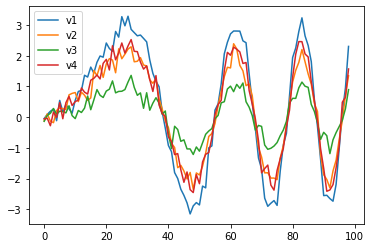
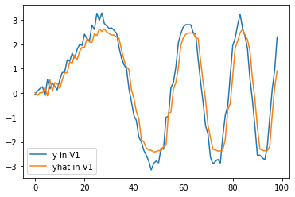
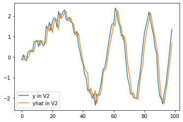
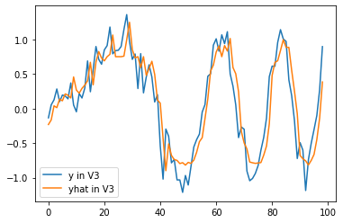
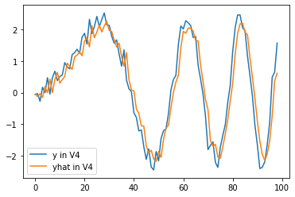
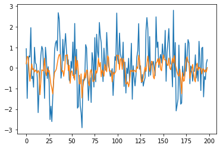
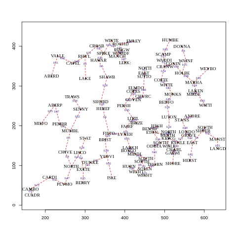
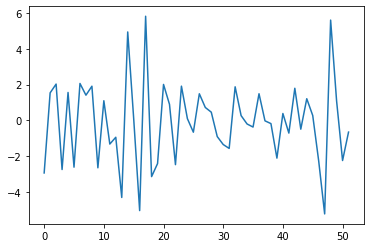

import networkx as nx
import numpy as np
import matplotlib.pyplot as plt
import pandas as pd
import torchSimulation
https://pytorch-geometric-temporal.readthedocs.io/en/latest/modules/dataset.html#module-torch_geometric_temporal.dataset.chickenpox
import
공식 홈페이지 예제
data
from torch_geometric_temporal.dataset import WikiMathsDatasetLoader
from torch_geometric_temporal.signal import temporal_signal_split
loader = WikiMathsDatasetLoader()
dataset = loader.get_dataset(lags=14)
train_dataset, test_dataset = temporal_signal_split(dataset, train_ratio=0.5)RecurrentGCN
import torch
import torch.nn.functional as F
from torch_geometric_temporal.nn.recurrent import GConvGRU
class RecurrentGCN(torch.nn.Module):
def __init__(self, node_features, filters):
super(RecurrentGCN, self).__init__()
self.recurrent = GConvGRU(node_features, filters, 2)
self.linear = torch.nn.Linear(filters, 1)
def forward(self, x, edge_index, edge_weight):
h = self.recurrent(x, edge_index, edge_weight)
h = F.relu(h)
h = self.linear(h)
return hLearn
from tqdm import tqdm
model = RecurrentGCN(node_features=14, filters=32)
optimizer = torch.optim.Adam(model.parameters(), lr=0.01)
model.train()
for epoch in tqdm(range(1)):
for time, snapshot in enumerate(train_dataset):
y_hat = model(snapshot.x, snapshot.edge_index, snapshot.edge_attr)
cost = torch.mean((y_hat-snapshot.y)**2)
cost.backward()
optimizer.step()
optimizer.zero_grad()100%|██████████| 1/1 [00:11<00:00, 11.93s/it]for time, snapshot in enumerate(train_dataset):
_x = snapshot.x
_edge_index = snapshot.edge_index
_edge_attr = snapshot.edge_attr
_y = snapshot.y
break_x.shapetorch.Size([1068, 14])snapshot.y.shapetorch.Size([1068])- 1068개의 nodes
- 한 개의 node에 mapping된 차원의 수
_edge_index.shapetorch.Size([2, 27079])_edge_attr.shapetorch.Size([27079])_y.shapetorch.Size([1068])우리 예제
import numpy as np
import matplotlib.pyplot as plt
import pandas as pd
import torchT = 100
N = 4 # number of Nodes
E = np.array([[0,1],[1,2],[2,3],[3,0]]).T
V = np.array([1,2,3,4])
AMP = np.array([3,2,1,2.2])
t = np.arange(0,T)
node_features = 1f = np.stack([a*np.sin(2*t**2/1000)+np.random.normal(loc=0,scale=0.2,size=T) for a in AMP],axis=1).reshape(T,N,node_features)
f = torch.tensor(f).float()f.shapetorch.Size([100, 4, 1])X = f[:99,:,:]
y = f[1:,:,:]plt.plot(y[:,0,0],label="v1")
plt.plot(y[:,1,0],label="v2")
plt.plot(y[:,2,0],label="v3")
plt.plot(y[:,3,0],label="v4")
plt.legend()<matplotlib.legend.Legend at 0x7efc48673490>
edge_index = torch.tensor(E)
edge_attr = torch.tensor(np.array([1,1,1,1]),dtype=torch.float32)_ee = enumerate(zip(X,y))from tqdm import tqdm
model = RecurrentGCN(node_features=1, filters=4)
optimizer = torch.optim.Adam(model.parameters(), lr=0.01)
model.train()
for epoch in tqdm(range(50)):
for time, (xt,yt) in enumerate(zip(X,y)):
y_hat = model(xt, edge_index, edge_attr)
cost = torch.mean((y_hat-yt)**2)
cost.backward()
optimizer.step()
optimizer.zero_grad()100%|██████████| 50/50 [00:16<00:00, 3.01it/s]yhat = torch.stack([model(xt, edge_index, edge_attr) for xt in X]).detach().numpy()plt.plot(y[:,0,0],label="y in V1")
plt.plot(yhat[:,0,0],label="yhat in V1")
plt.legend()<matplotlib.legend.Legend at 0x7efc48524730>
plt.plot(y[:,1,0],label="y in V2")
plt.plot(yhat[:,1,0],label="yhat in V2")
plt.legend()<matplotlib.legend.Legend at 0x7efc4849c730>
plt.plot(y[:,2,0],label="y in V3")
plt.plot(yhat[:,2,0],label="yhat in V3")
plt.legend()<matplotlib.legend.Legend at 0x7efc484098e0>
plt.plot(y[:,3,0],label="y in V4")
plt.plot(yhat[:,3,0],label="yhat in V4")
plt.legend()<matplotlib.legend.Legend at 0x7efc483f5880>
GNAR
import rpy2
import rpy2.robjects as ro
from rpy2.robjects.vectors import FloatVector
from rpy2.robjects.packages import importr%load_ext rpy2.ipython%%R
library(GNAR)
library(igraph)R[write to console]: Loading required package: igraph
R[write to console]:
Attaching package: ‘igraph’
R[write to console]: The following objects are masked from ‘package:stats’:
decompose, spectrum
R[write to console]: The following object is masked from ‘package:base’:
union
R[write to console]: Loading required package: wordcloud
R[write to console]: Loading required package: RColorBrewer
%%R
summary(fiveNet)GNARnet with 5 nodes and 10 edges
of equal length 1%%R
edges <- as.matrix(fiveNet)
edges [,1] [,2] [,3] [,4] [,5]
[1,] 0 0 0 1 1
[2,] 0 0 1 1 0
[3,] 0 1 0 1 0
[4,] 1 1 1 0 0
[5,] 1 0 0 0 0%%R
print(fiveNet)GNARnet with 5 nodes
edges:1--4 1--5 2--3 2--4 3--2 3--4 4--1 4--2 4--3 5--1
edges of each of length 1 %%R
data("fiveNode")
answer <- GNARfit(vts = fiveVTS, net = fiveNet, alphaOrder = 2, betaOrder = c(1, 1))
answerModel:
GNAR(2,[1,1])
Call:
lm(formula = yvec ~ dmat + 0)
Coefficients:
dmatalpha1 dmatbeta1.1 dmatalpha2 dmatbeta2.1
0.20624 0.50277 0.02124 -0.09523
%%R
layout(matrix(c(1,2,3,4), 2, 2, byrow = TRUE))
plot(fiveVTS[, 1], ylab = "Node A Time Series")
lines(fitted(answer)[, 1], col = 2)
plot(fiveVTS[, 2], ylab = "Node B Time Series")
lines(fitted(answer)[, 2], col = 2)
plot(fiveVTS[, 3], ylab = "Node C Time Series")
lines(fitted(answer)[, 3], col = 2)
plot(fiveVTS[, 4], ylab = "Node D Time Series")
lines(fitted(answer)[, 4], col = 2)
%R -o fiveVTS
%R -o edges- node: 5
- time 200
edges_tensor = torch.tensor(edges)nonzero_indices = edges_tensor.nonzero()fiveNet_edge = np.array(nonzero_indices).T
fiveNet_edgearray([[0, 0, 1, 1, 2, 2, 3, 3, 3, 4],
[3, 4, 2, 3, 1, 3, 0, 1, 2, 0]])fiveVTS.shape(200, 5)T = 200
N = 5 # number of Nodes
E = fiveNet_edge
V = np.array([1,2,3,4,5])
t = np.arange(0,T)
node_features = 1f = torch.tensor(fiveVTS).reshape(200,5,1).float()X = f[:199,:,:]
y = f[1:,:,:]edge_index = torch.tensor(E)
edge_attr = torch.tensor(np.array([1,1,1,1,1,1,1,1,1,1]),dtype=torch.float32)_ee = enumerate(zip(X,y))from tqdm import tqdm
model = RecurrentGCN(node_features=1, filters=8)
optimizer = torch.optim.Adam(model.parameters(), lr=0.05)
model.train()
for epoch in tqdm(range(50)):
for time, (xt,yt) in enumerate(zip(X,y)):
y_hat = model(xt, edge_index, edge_attr)
cost = torch.mean((y_hat-yt)**2)
cost.backward()
optimizer.step()
optimizer.zero_grad()100%|█| 50/50 [00:34<00:00, 1.45it/yhat = torch.stack([model(xt, edge_index, edge_attr) for xt in X]).detach().numpy()yhat.shape(199, 5, 1)plt.plot(y[:,1])
plt.plot(yhat[:,1].data)
Wind network time series
the data suite vswind that contains a number of R objects pertaining to 721 wind speeds taken at each of 102 weather stations in England and Wales. The suite contains the vector time series vswindts, the associated network vswindnet, a character vector of the weather station location names in vswindnames and coordinates of the stations in the two column matrix vswindcoords. The data originate from the UK Met Office site http://wow.metoffice.gov.uk and full details can be found in the vswind help file in the GNAR package.
%%R
oldpar <- par(cex = 0.75)
windnetplot()
par(oldpar)
%%R
edges_wind <- as.matrix(vswindnet)%R -o vswindts
%R -o edges_wind- nodes : 102
- time step : 721
vswindts.shape(721, 102)edges_wind.shape(102, 102)edges_winds = torch.tensor(edges_wind)nonzero_indices_wind = edges_winds.nonzero()vswindnet_edge = np.array(nonzero_indices_wind).T
vswindnet_edge.shape(2, 202)T = 721
N = 102 # number of Nodes
E = vswindnet_edge
V = np.array(range(101))
t = np.arange(0,T)
node_features = 1f = torch.tensor(vswindts).reshape(721,102,1).float()X = f[:720,:,:]
y = f[1:,:,:]edge_index = torch.tensor(E)
edge_attr = torch.tensor(np.array([1]*202),dtype=torch.float32)_ee = enumerate(zip(X,y))from tqdm import tqdm
model = RecurrentGCN(node_features=1, filters=4)
optimizer = torch.optim.Adam(model.parameters(), lr=0.01)
model.train()
for epoch in tqdm(range(50)):
for time, (xt,yt) in enumerate(zip(X,y)):
y_hat = model(xt, edge_index, edge_attr)
cost = torch.mean((y_hat-yt)**2)
cost.backward()
optimizer.step()
optimizer.zero_grad()100%|██████████| 50/50 [02:16<00:00, 2.73s/it]yhat = torch.stack([model(xt, edge_index, edge_attr) for xt in X]).detach().numpy()yhat.shape(720, 102, 1)plt.plot(y[:,1])
plt.plot(yhat[:,1].data)
OECD GDP
해당예제는 GNAR 패키지에서 네트워크(엣지)를 맞추는 예제로서 나옴, 그렇기에 네트워크 존재하지 않아 연구 예제로서 사용하지 않을 예정
이 데이터는 네트워크를 추정하여 fit 및 predict함
GOP growth rate time series
35 countries from the OECD website
time series : 1961 - 2013
T = 52
Nodes = 35
In this data set 20.8% (379 out of 1820) of the observations were missing due to some nodes not being included from the start.
%%R
library("fields")%R -o gdpVTSgdpVTS.shape(52, 35)plt.plot(gdpVTS[:,1])